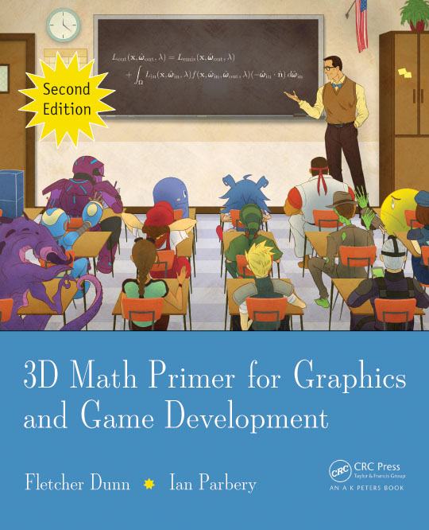

Dunn, F., & Parberry, I. (2011). 3D Math Primer for Graphics and Game Development (2nd ed.). A K Peters/CRC Press. https://doi.org/10.1201/b11152
您也可以通过 此链接 访问原版英文内容。如果觉得内容对您有帮助，请考虑购买正版。
欢迎访问 面向图形与游戏开发的三维数学启蒙宝典 的中文翻译版本，在教学过程中偶然发现这本优秀的教材之后，决定将其翻译为中文，以供中文读者阅读。
作为一本面向对图形与游戏开发有兴趣的读者的启蒙教材，本书旨在用最简单的语言和最直观的图示来介绍三维数学的基础知识。内容由浅入深，适合各种基础的读者阅读。
你可以从 这里 开始阅读本书的完整内容。
本书英文版权由原作者享有，本中文译本由 Dr. Daniel Zhang 翻译，如有错漏，请联系修改。